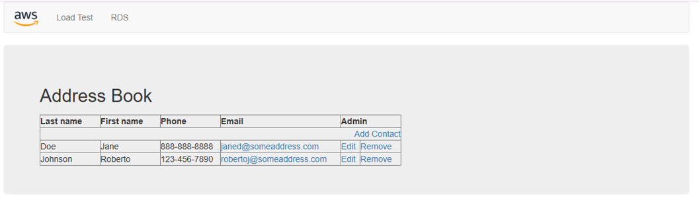
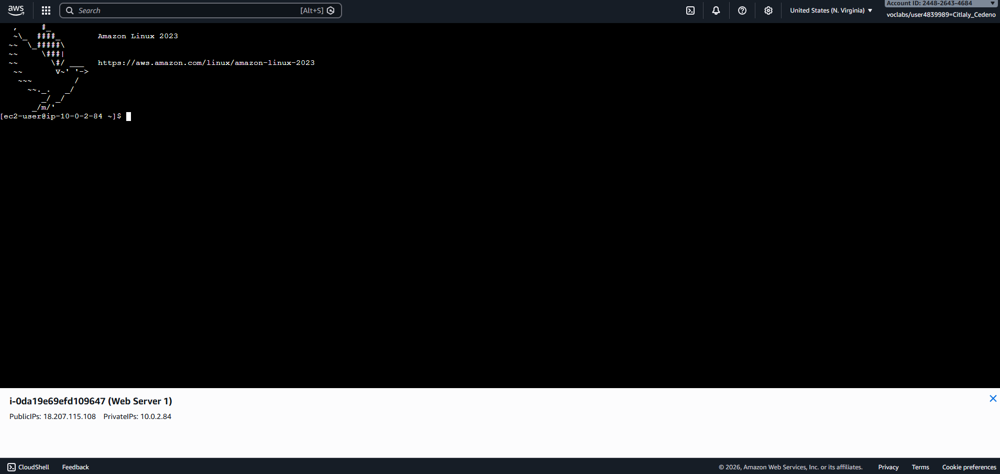

In this lab, I worked with Amazon RDS to explore cloud-based database management in AWS. I learned how to create and configure a relational database instance, connect to the database, and manage basic settings such as security groups and access permissions. This lab strengthened my understanding of cloud databases, AWS services, and secure database deployment in a cloud environment.

In this lab, I built and configured a custom Amazon VPC environment in AWS and deployed a web server on an EC2 instance. I configured public and private subnets, route tables, security groups, NAT gateways, and Internet gateways to create a secure cloud network architecture. I also installed and configured an Apache web server using EC2 user data scripts and verified connectivity through a browser-accessible web application. This lab strengthened my understanding of AWS networking, VPC architecture, cloud security, and web server deployment.
